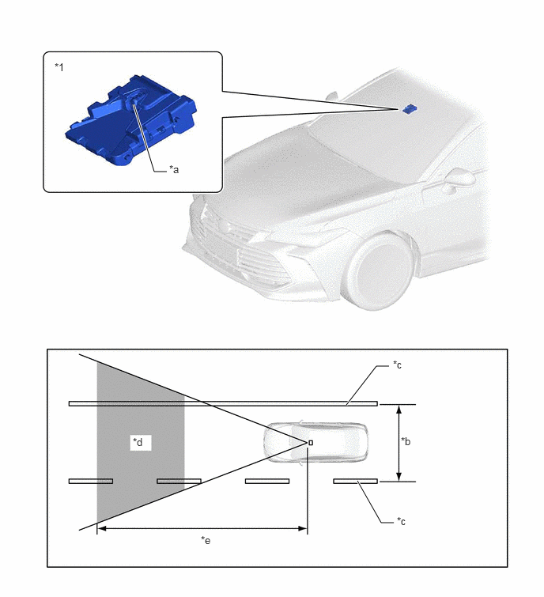
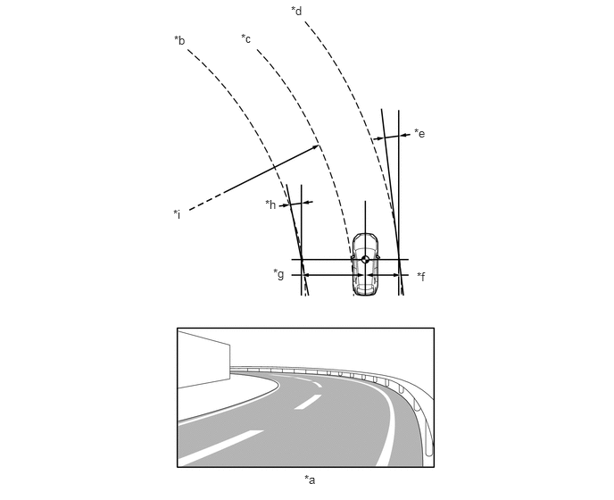

构造
前向识别摄像机最远可拍摄前向识别摄像机其前方约 50 m (164 ft.) 的道路图像。
前向识别摄像机检测车道标识并计算至车道中央的半径、车辆中央位置距左右车道标识的距离偏差、车辆行驶方向和左右车道标识之间的角度偏差。
进行下列任一操作时，必须调节前向识别摄像机角度。有关详情，请参考修理手册。
拆下并重新安装或更换前向识别摄像机。
更换或调节与轮胎或悬架有关的零件。
前向识别摄像机遭受强烈冲击。
如果车辆接近车道标识（但未超越），只要车辆与车道标识保持平行，则车道偏离警示系统不会工作。

| *1 | 摄像机传感器（前向识别摄像机） | - | - |
| *a | 单目摄像机 | *b | 约 3.0 m (9.8 ft.) 或更远 |
| *c | 车道标识 | *d | 摄像机传感器识别范围 |
| *e | 约 50 m (164 ft.) | - | - |

| *a | 前向识别摄像机拍摄到图像 | *b | 左车道标识 |
| *c | 车道中央 | *d | 右车道标识 |
| *e | 车辆行驶方向和右车道标识之间的角度 | *f | 自车辆到右侧车道标识的距离 |
| *g | 自车辆到左侧车道标识的距离 | *h | 车辆行驶方向和左车道标识之间的角度 |
| *i | 车道半径（如果仅识别左车道标识或右车道标识，则计算识别的车道标识的半径） | - | - |